# Pack29f — remaining phone and desktop flows Production: https://buhurt-os.vercel.app · app c2b1624 · 2026-10-29 (America/Denver). Browser: Edge. Counter phone: 390×844. Organizer desk: 1440×900. Additional counter desktop capture: 1440×900. Synthetic event only: TEST Outrance V26.4 Rehearsal 2026-10-28, event 0081228a-e8d6-44b6-98a9-65cf5fe8dc7a. The Test badge was confirmed in the immediately preceding Pack29e run. All records preserved. No application code, migrations, roles, auth settings or browser settings were changed. Viewport overrides were temporary. ## Verdict Core phone submission, mixed sheets, exact final scores and Red/Blue duel flows work. Four UI defects were found, including a blocked Profight recount. Genuine hidden-tab recovery remains unverified because Windows refused native tab-switch input. This is a focused continuation, not a claim that every original A–H scenario was repeated. ## Results | Journey | Result | Evidence | |---|---|---| | Counter QR sign-in on real production | PASS | Existing event Counter QR signs in, asks operator name, Lyst and Line marshal. No CORS error observed. QR secret intentionally excluded from uploaded evidence. | | Line marshal strikes / undo | PASS | Nine Red strikes, add one Red takedown, Undo Red takedown restores takedowns to zero. Screenshot 02. | | Automatic phone sheet | PASS | End round opens Round 1 · your sheet automatically, with own 9–0 tally and 10–9 result. No other marshal sheets on phone. Screenshot 03. | | Phones plus paper | PASS | Two paper sheets plus phone submission arrive on desk without reload. 3 marshals, average 9.67–9.33. Before submission desk identifies the missing phone. 04–06. | | Criteria order/stop | PASS (tested branch) | Round 2 zero strikes: Grappling Even moves to List control. Blue stops criteria and yields 9–10; no aggression/defence question after decisive answer. 09. | | Recount after all sheets submitted | FAIL F1 | Recount demands a reason but no textbox exists. Exact error: Say why the round goes back to the line marshals. Screenshot 07. | | Submitted sheet round identity | FAIL F2 | After round 1 confirmed and round 2 merely prepared, phone labels old 9–0/10–9 sheet Round 2: sheet handed in. Screenshot 08. | | Profight final desk + phone Last fight | PASS for result data | Unequal sheets across rounds finish with Man C winning split decision, 18.67–19.33. Phone moves to waiting for next fight and displays exact score without reload. 10–11 and 23. | | Final phone status wording | FAIL F3 | Stale Sheet handed in / Score confirmed: Wait for the next round contradicts Waiting for the next fight on both Profight and duel. 11, 21. | | Prepared line-marshal identity | FAIL F4 | Prepared message says C vs A while heading/pads say A vs C. Source uses ordinary side-oriented names rather than canonical line-marshal names. 01, 08. | | Corner appeal validation | PASS (validation only) | Synthetic corner appeal recorded within 15 min. Decision note alone does not enable Uphold; outcome is required. Appeal rejected with synthetic validation explanation, no result correction. 13. | | Duel unprepared-phone start gate | PASS | Start paused popup with reason field and disabled override until entered. Waiting for phone preparation then retrying starts normally without override. 14. | | Red duel confirm/edit | PASS | +2 and +1 => 3, automatic Confirm score/Edit score opens. Edit to 4 retained adjustment for marshal review; desk required reason. Awarded 4–0 after review. 15–16. | | Blue duel count and retry | PASS with transient connection error | Same test phone switched to Blue for round 2. +2 retained during no signal. First Confirm failed with retained-count message; retry succeeded. Desk received 2, awarded 0–2 with no review reason. 17–19. This is sequential Red/Blue coverage, not two independent physical phones. | | Duel final result | PASS | Desk official Man B 4–2; phone Last fight matches. 20–22. | | Duplicate counter tab | PASS | Opening second counter tab displays ownership warning and prevents counting until Use this tab. No takeover performed. 22. | | Phone navigation targets | PASS | New counter, Change side, Change Lyst, Stop counting all 44 px high. phone-targets.json. | | Horizontal page overflow | PASS on captured states | 390-wide phone and 1440-wide desk captures have no measured horizontal page overflow. This does not prove every control is reachable one-handed on physical hardware. | | Genuine background/foreground recovery | BLOCKED / NOT VERIFIED | Native Edge tab click failed: GetCursorPos failed: Access is denied. (0x80070005). DOM reported visible and is insufficient to certify actual hidden state. Do not mark this passed. | ## Suggested fixes [Source-grounded code proposals, reasoning and verification steps](pack29f-suggested-fixes.md). No fixes were applied. Priorities: unblock recount first, then correct submitted-sheet round identity, clear obsolete final-state success notices, and align line-marshal prepared names. ## Transport and evidence limits There was a transient no-signal episode during the duel. It was not deliberately induced. Pending taps and awarded round were retained; all actions eventually reached the server. No backend root cause established; no captured console warnings/errors. Tool selector wait timeouts were followed by state inspection, not treated as application errors. Desktop and phone share one Edge profile, so this does not prove independent-device authentication isolation. A newly opened desk URL while in device mode redirects to the counter; the existing organizer desk remained usable. Screenshot 12-phone-final-desktop was actually 390×844 because the viewport command did not target that older tab; it is retained as raw evidence but excluded from the gallery. 22 is the verified 1440×900 counter capture. Screenshots may be scrolled to the relevant controls; paired text snapshots preserve full UI context. ## Preserved records - Profight e0f29ac4-d4e0-4aa5-b6b5-5766d644979d (existing queued fixture, now final), Field 5. Red Man A vs Blue Man C. R1 phone9–0, paper Bea3–10, Cara10–3 => 9.667–9.333. R2 phone0–0, grappling Even/list control Blue => 9–10. Final 18.667–19.333, Blue Man C, split decision. Rounded database score columns remain 19–19 by design; exact UI result is correct. - New duel 79525e42-6df0-4e86-80c4-225f77fa4098, Field 6, same synthetic Men's Longsword competition. Man B vs Man A. R1 4–0, R2 0–2, final Man B4–2. One retained correction action remains as evidence. - Test operator TEST Pack29f Line Marshal; phone moved back to Line marshal/Lyst 5 after duel checks. Session and evidence preserved. - Synthetic appeal recorded and rejected with note Synthetic validation complete; no correction warranted. - Existing KO/medic holds and other fixtures untouched. ## Next test priority Implement/review F1–F4, then repeat recount end to end (paper sheets must remain), round transition labels, and final phone notices. Run the genuine hidden-tab test with working native tab control or manually. Controlled offline/reconnect and simultaneous independent Red/Blue phones remain separate hardware/session coverage; the incidental connection recovery here is not a substitute.
# Suggested fixes — c2b1624 (not applied)
These suggestions are grounded in the production commit's source, inspected with git show c2b1624:<path>. They are proposals, not tested patches. No application files were edited.
## F1 — P1: recount has no way to enter its required reason
Source: src/components/lyst/OutranceScoring.tsx, recount() around line 177 and RoundSheets reason input around line 411.
Observed: after all 3 sheets arrive, clicking Return the round to the line marshals for recount displays “Say why the round goes back to the line marshals.” The dialog contains zero textboxes. The reason input is rendered only when deliveryReason or missing phones is truthy, while recount always requires 3 characters. Consequently the normal all-submitted path cannot recount.
Minimal proposed change: also expose the reason input whenever the recount action is available. Keep normal confirmation reason-free; do not change canConfirm or server authorization.
e.g. replace the input's visibility condition:
~~~tsx
// In RoundSheets, within the existing !confirmed block:
{(deliveryReason || missing.length > 0 || sheets.length > 0) && (
<label className="ly-reason">
<span>Reason (required for recount or an override)</span>
<input
value={reason}
maxLength={200}
onChange={e => onReason(e.target.value)}
placeholder="Why the marshal is returning or overriding this round"
/>
</label>
)}
~~~
Why: the same reason state already feeds recount and missing-phone confirmation. This removes the impossible UI dependency without weakening the audit requirement. A more focused follow-up design could use a dedicated Recount dialog with its own reason state; the small change above fits the current architecture.
Verify: submit a phone plus two paper sheets; enter a reason; return for recount. Only phone submission should reopen; both paper sheets must remain. Resubmit and confirm with no override reason required. Test at both viewport sizes.
## F2 — P2: next round is incorrectly labeled already handed in
Source: src/pages/lyst/CounterPage.tsx lines 280, 368, 545.
Observed after confirming round 1, before round 2 starts: phone says “Prepared round 2” and “Round 2: sheet handed in” with round 1's 9–0 strikes / 10–9 result. The payload selection omSheet is scoped to om.round_no/state.round.no, but the label uses round, which prioritizes the next prepared run.
~~~tsx
// In the existing omSheet branch, label the sheet's server round,
// not the next prepared counter run:
<b>Round {om?.round_no}: sheet handed in</b>
~~~
Why: changing the shared round variable could break prepared/offline counting. Limit the fix to the handed-in sheet's identity. If preferred, derive a submittedSheetRound alongside omSheet and use it in all sheet-related text.
Verify: submit round 1, confirm it on desk, and wait before starting round 2. The old sheet must remain labeled round 1; no round-2 submission is implied. Starting round 2 must show fresh zero counts and permit its own submission.
## F3 — P2: stale success notice contradicts final fight state
Source: src/pages/lyst/CounterPage.tsx notice state around line 281 and submission success around line 477 (also duel done()).
Observed on both Profight and duel after finalization: Last fight correctly shows the final score and “Waiting for the next fight”, but the alert still says “Sheet handed in. Wait for the next round.” / “Score confirmed. Wait for the next round.” It disappears on a fresh tab; it is local transient notice state.
~~~tsx
// Near the notice state/effects. Clear only obsolete success notices;
// keep offline evidence, failures, and review notices intact.
useEffect(() => {
if (!state.final && !state.waiting) return;
setNotice(previous =>
previous === 'Sheet handed in. Wait for the next round.' ||
previous === 'Score confirmed. Wait for the next round.'
? null
: previous
);
}, [state.final, state.waiting]);
~~~
Why: the main counter banner already derives the current phase from server state. A cached success string should not contradict it. A future typed notice model keyed by match/run would further avoid stale notices across all transitions.
Verify: finish a Profight and a duel without reloading the phone; assert the exact Last fight score and absence of the obsolete next-round success notice. Also verify that held-count warnings survive finalization.
## F4 — P3: line-marshal prepared-round text reverses sides
Source: src/pages/lyst/CounterPage.tsx around line 532. Main heading and strike pads use om.fighters.a/b; the prepared-round text uses side-oriented state.fighter/opponent.
Observed: heading is Man A vs Man C, but Prepared round says Man C vs Man A. This is a presentation inconsistency, not proof that the prepared run points to the previous match. The same pair happened to fight in reverse order previously; do not infer data corruption from that coincidence.
~~~tsx
// Use the same canonical red/blue identities as the Profight heading.
const preparedA = lineMarshal && om?.position === 'ok'
? om.fighters.a ?? sides.a.name
: state.fighter;
const preparedB = lineMarshal && om?.position === 'ok'
? om.fighters.b ?? sides.b.name
: state.opponent;
// In the existing prepared-round paragraph:
<p>Prepared round {state.prepared_run.no}: {preparedA} vs {preparedB}.
{/* Keep the existing offline-start instructions here. */}
</p>
~~~
Why: a line marshal scores both fighters, so the ordinary one-side counter identity is inappropriate. Preserve the side-oriented wording for ordinary Red/Blue counters.
Verify: line-marshal heading, prepared text and pads agree on Red/Blue names; ordinary Blue counter still leads with its own fighter as intended.
## Transport interruption and hidden-tab test
A transient no-signal episode retained Blue's count of 2. Confirm showed “Could not confirm. Your counts are kept here. Try again.” Retry succeeded, the desk received 2, and result finalized 4–2. No warn/error console entries were captured. No network root cause was established, so do not invent a backend fix. Add a recovery regression in a test harness with separate desk/phone browser contexts:
~~~ts
// Suggested Playwright test fragment; requires separately authenticated fixtures.
await phone.context().setOffline(true);
await phone.getByRole('button', { name: 'Count two points, head or torso' }).click();
await expect(phone.getByRole('status', { name: 'Your count 2', exact: true })).toBeVisible();
await phone.context().setOffline(false);
// End round from desk, confirm the phone, then assert one accepted count of 2,
// no duplicate tap, and a final score consistent with the marshal's award.
~~~
The genuine hidden-tab check was blocked by Windows input: “GetCursorPos failed: Access is denied. (0x80070005)”. DOM visibility readings stayed visible and cannot prove a background/foreground transition. No app fix is justified by this tooling failure. Retest manually or in a browser harness with real tab activation: background desk 1, submit a paper sheet from desk 2, foreground desk 1 and time the update without reload.
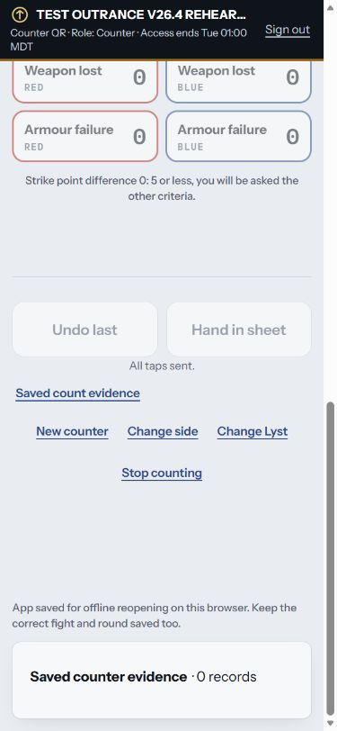
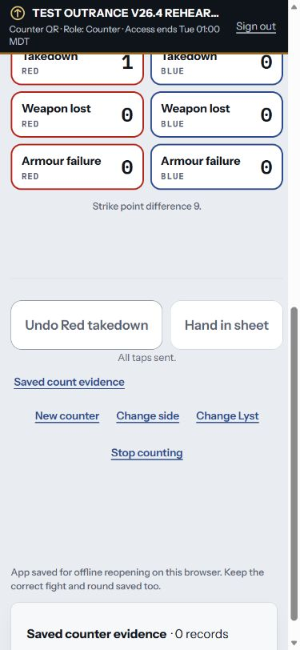
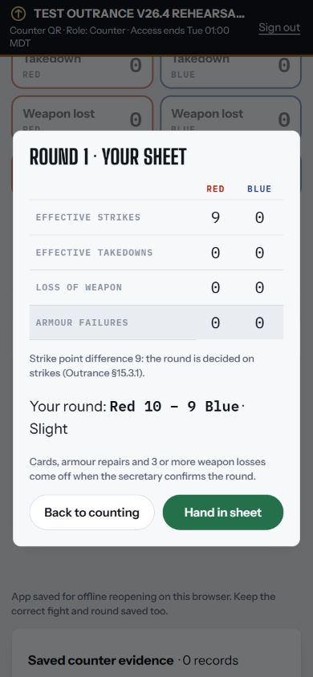
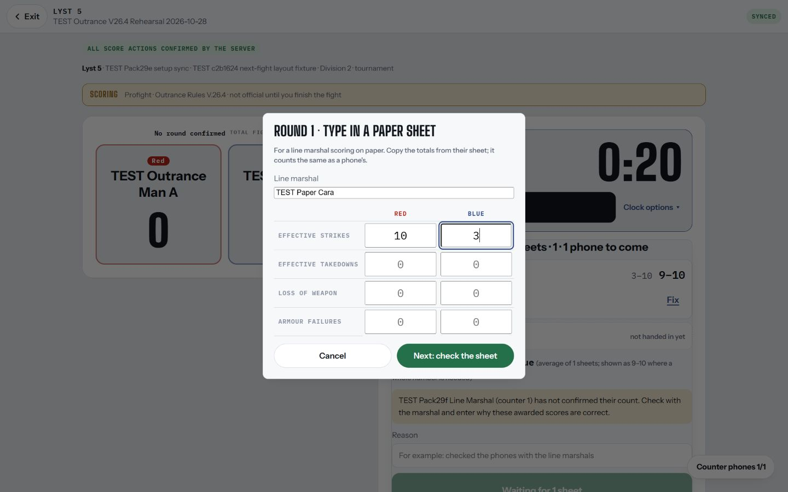
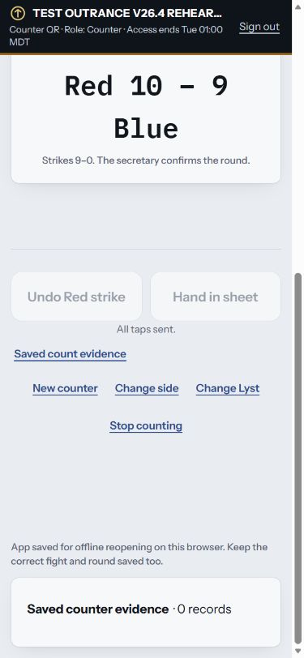
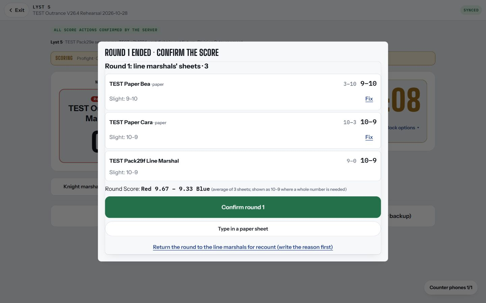
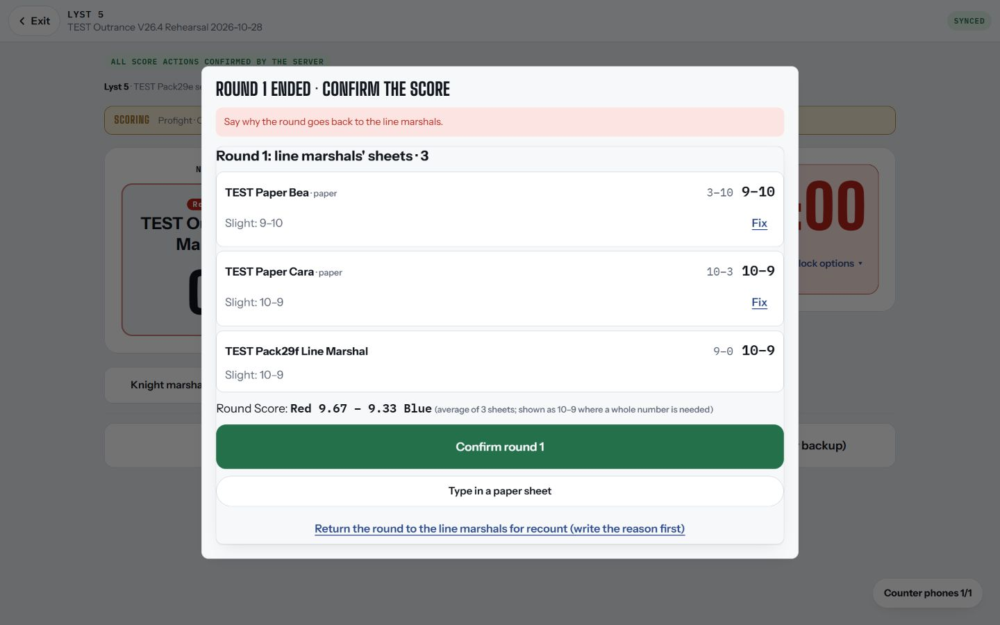
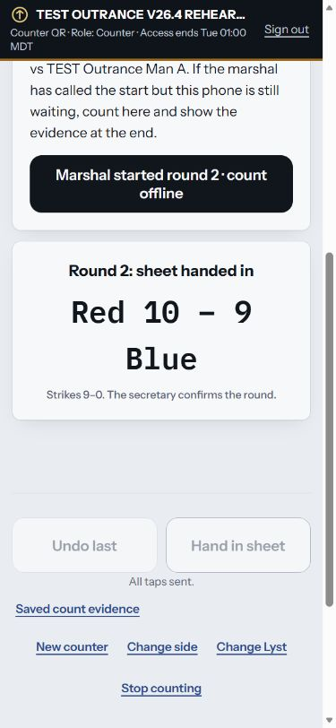
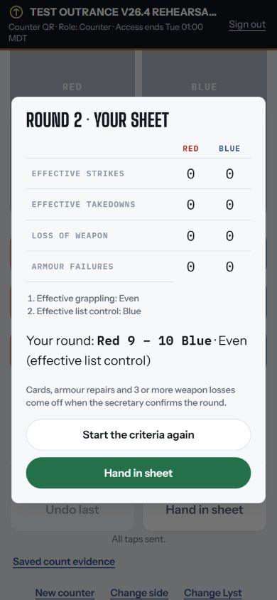
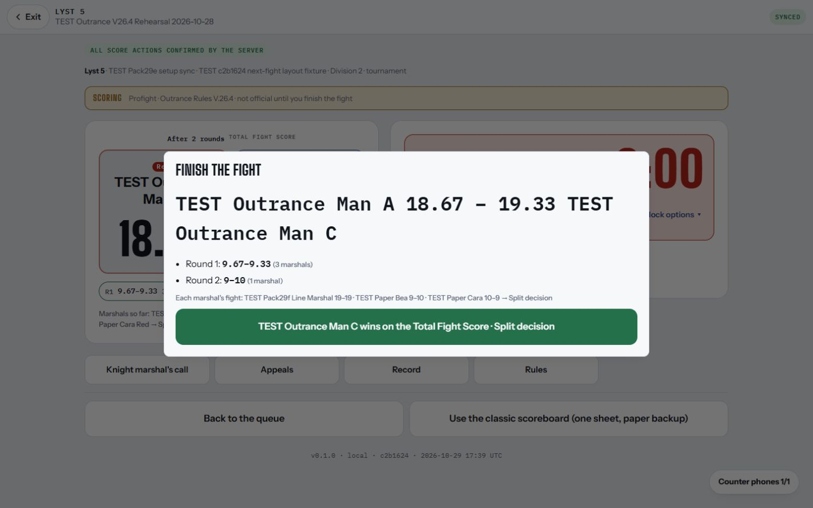
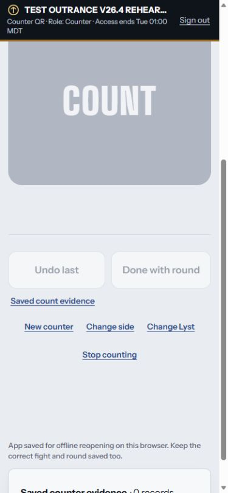
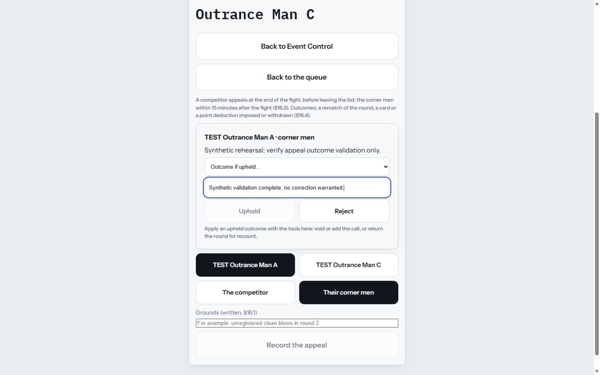
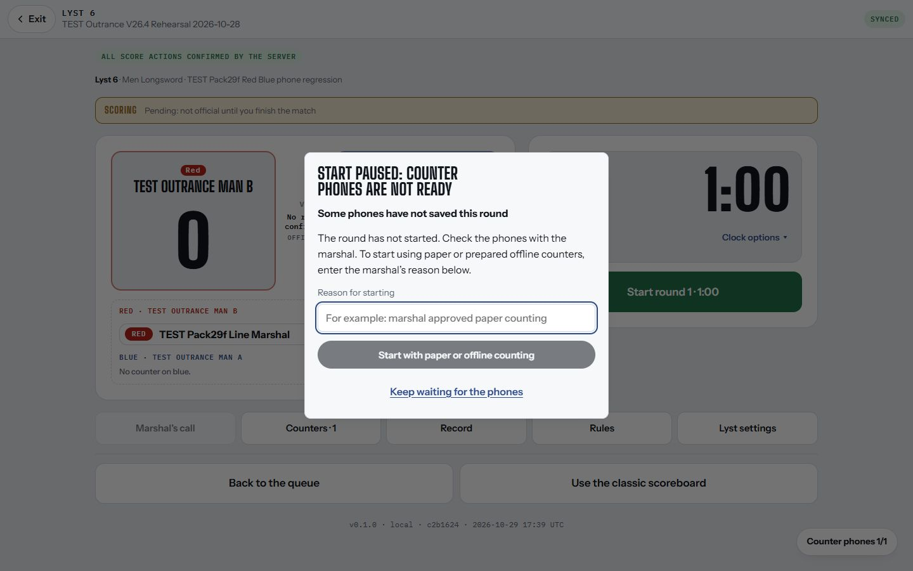
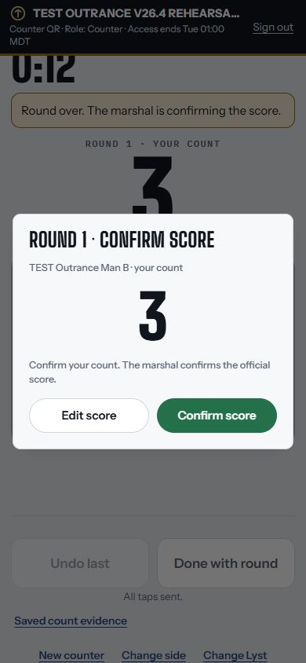
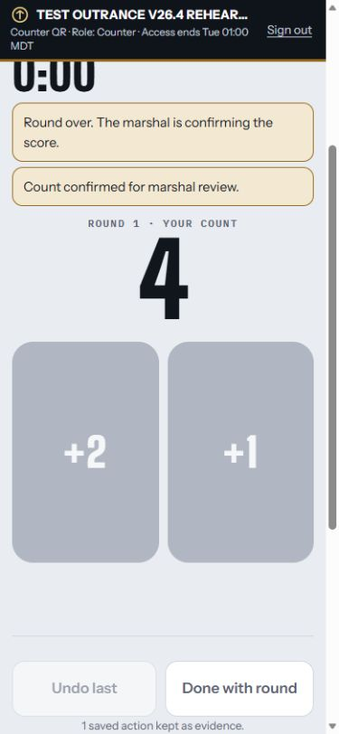
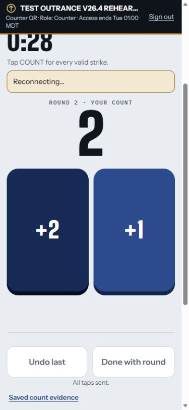
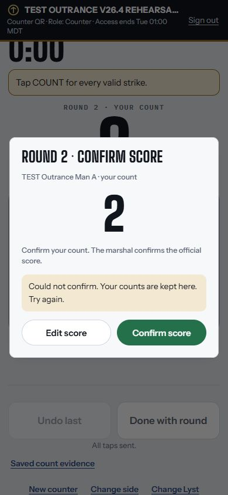
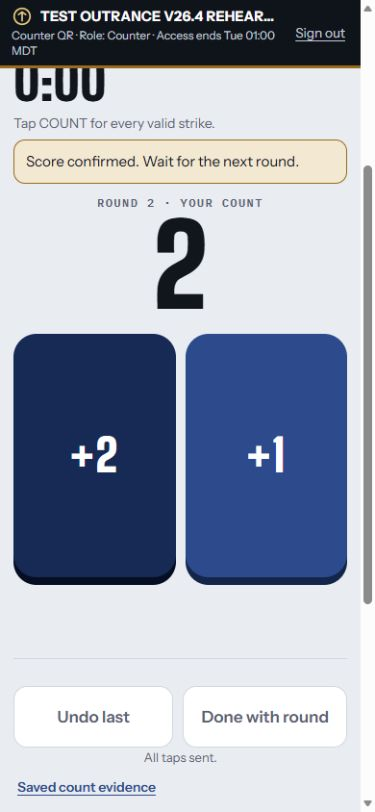
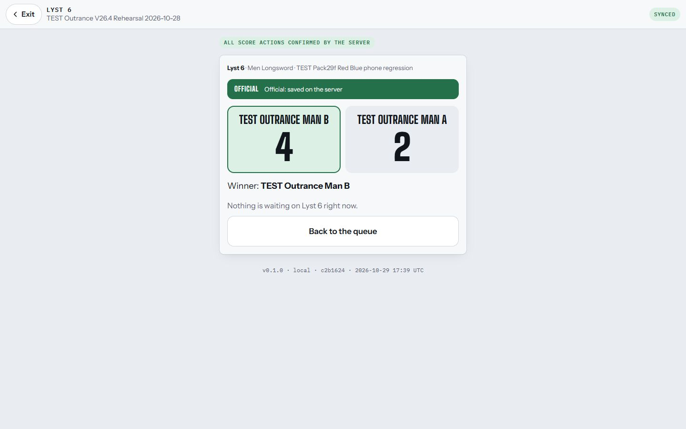
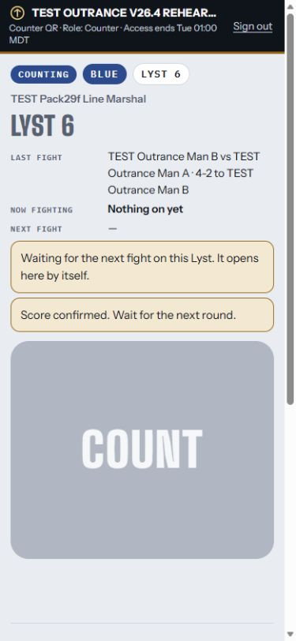
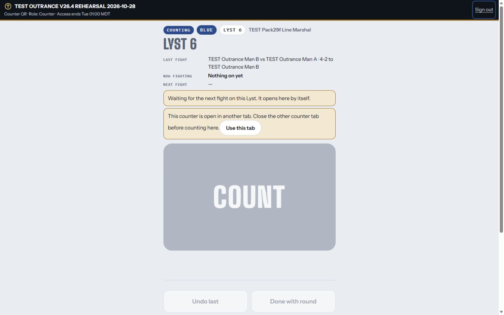
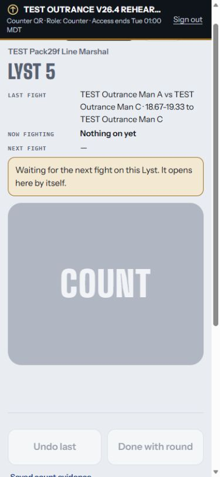